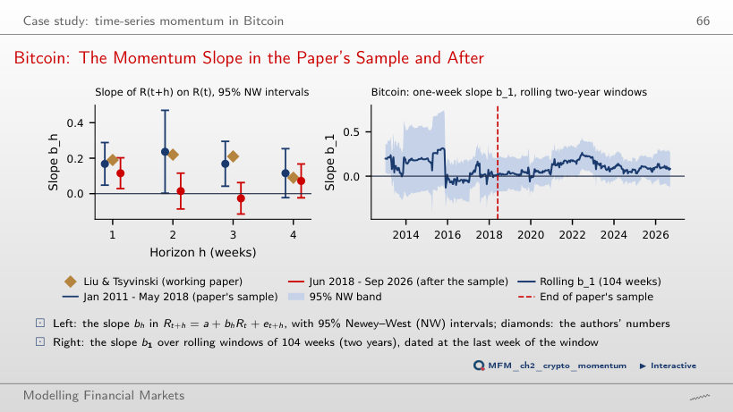

The slide of the lecture is on the left, the same figure on the right, computed in the browser from the same data. The ▶ button moves the parameter step by step.
Returns and Information · Autocorrelation and Variance Ratios · Out-of-Sample Predictability · Event Studies · Multiple Testing and Anomalies · Case Study: Time-Series Momentum in Bitcoin
Returns and Information
A Game: Which Series Is the Real Market?

Answer
A random walk with drift can produce trends, and Normal innovations can produce large moves. These visual features alone do not constitute a statistical rejection. The real series is D; recognising it does not establish return predictability. This is why efficiency is tested with statistics rather than by inspection.
Three models for returns and volatility

Answer
Clearly above 3: 4.8, against 3.0 for RW1 and 4.1 for GARCH. Mixing a calm period with a turbulent one gives fat tails without any dependence, so neither the chart of returns nor the kurtosis tells RW2 from GARCH. The difference lies elsewhere: in RW2 volatility rises at a date fixed in advance and the returns stay independent; in GARCH today's volatility depends on yesterday's shock (α = 0.08) and on yesterday's volatility (β = 0.90), so the returns are dependent.
GARCH: returns versus squared returns

Answer
It rises: in this simulation, the sample autocorrelation rises from 0.216 to 0.272. A long-run variance of 1 does not fix the dependence of squared returns. At α = 0.095, 3α² + 2αβ + β² equals 1.0081: the stationary model has no finite fourth moment, so the theoretical ACF of squared returns is undefined. The sample ACF of the finite series can still be calculated. At α = 0 the returns are independent: the sample autocorrelation of the squares is 0.049 at lag 1 and goes down to −0.050 over lags 1–20. For α > 0 the series satisfies RW3 but violates RW2: the size of today's move depends on past shocks.
Autocorrelation and Variance Ratios
Lag-1 Autocorrelation Across Markets

Answer
Only the test using the i.i.d. standard error. With the i.i.d. standard error, |z| = 0.040/0.012 = 3.33; with the robust error, |z| = 0.040/0.027 = 1.48. The decision depends on the estimate relative to its standard error, not on the autocorrelation's magnitude alone. For the S&P 500, ρ̂₁ = −0.099 lies outside both test bands, with the same standard errors (0.027 robust, 0.012 i.i.d.); for the Euro Stoxx 50 or the Nikkei 225, ρ̂₁ falls outside the i.i.d. band but inside the robust one. The bars around the estimates are confidence intervals with the HAC standard error of the estimator (S&P 500: 0.030); they serve for comparisons, not for the test of ρ₁ = 0.
Variance-Ratio Profiles

Answer
The boundary is |0.754 − 1|/1.96 = 0.1255. The value 0.2460 is the deviation from the null before division by the cutoff. The value 0.1328 is the actual robust standard error at 20 days; it exceeds the boundary, so the test does not reject. The null band widens with q: its lower edge is 0.817 at 10 days, where VR = 0.767 is rejected, and 0.740 at 20 days. The calculation uses overlapping aggregated returns and the robust Lo–MacKinlay standard error.
Out-of-Sample Predictability
The Dividend–Price Ratio: Out-of-Sample Forecasts

Answer
No. For every start between 1970 and 2015, R²OS stays negative: −1.37% from 1990, −0.01% from 2000, −2.75% from 2010. The curve rises until 1990, and the 1990s boom wipes out the advantage. The Clark–West test over 1970–2026 gives t = 0.42 (p = 0.34), so the absence of predictability is not rejected.
Event Studies
Worked Example: the Romanian Bank Tax of December 2018

Answer
CAR falls by 1.18 × 1 percentage point because the benchmark return is subtracted after multiplication by beta: −1.1% − 1.18% = −2.28%. The +0.08% option reverses the adjustment's sign. The −1.1% option ignores the benchmark. CAR can change without any change in TLV prices. In the data, AR₀ = −8.3% and the CAR over days +1 to +5 is +7.2% (t = 3.82), although over days 0 to +5 the log return is −15.6% for TLV and −12.7% for the BET. The test for CAR[0,5] gives t = −0.48 with the prediction error and t = −0.54 with σ̂√L. A single event cannot separate overreaction, later news and a benchmark effect.
Multiple Testing and Anomalies
How Many “Anomalies” Does Pure Chance Produce?

Answer
The cutoff is 0.05/2,000 = 0.000025. The value 0.025 divides the level by two rather than by the number of tests; a two-sided p-value already includes both tails. The value 0.05 retains the individual level without controlling the family. Bonferroni's guarantee does not require independent tests. In the simulation, of 2,000 rules with no economic content, 104 (5.2%) have |t| > 1.96, six have |t| > 3.0, and the best has |t| = 3.30. Adding rules to the same family cannot lower the largest |t|.
Case Study: Time-Series Momentum in Bitcoin
Bitcoin: The Momentum Slope in the Paper's Sample and After

Answer
The regression supports a one-week predictive association. A one-standard-deviation increase in the current return corresponds to an estimated 0.96-percentage-point increase in next week's return, compared with 2.98 percentage points in the earlier period. Neither a trading rule after costs nor out-of-sample forecast errors are evaluated. Using a sample after the paper's sample period does not replace that evaluation. Over rolling two-year windows, b₁ is significant in 13% of the windows.
Stock indices, Bitcoin, Ethereum, TLV, BRD and BET: EODHD daily prices up to 18 September 2026. EUR/RON: the NBR reference rate. Monthly S&P 500 with dividends: Robert J. Shiller's public data, extended with daily S&P 500 prices; 3-month Treasury bill rate from FRED (TB3MS).